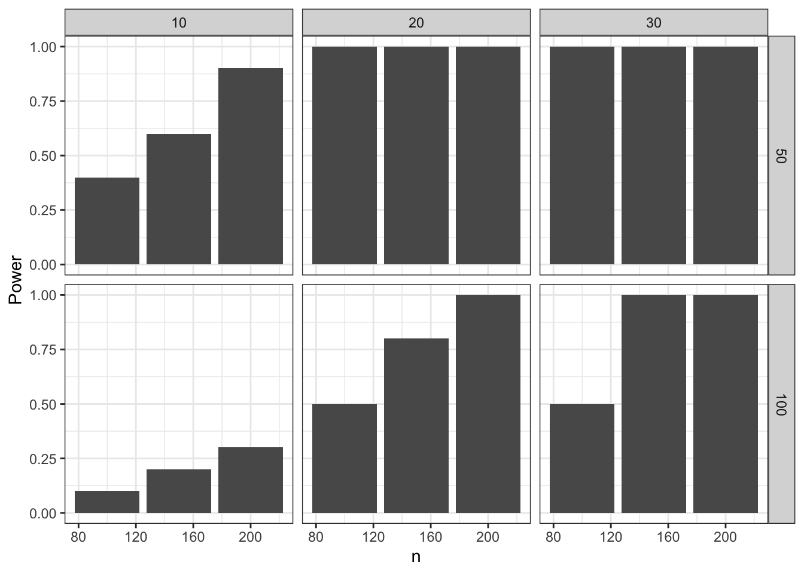
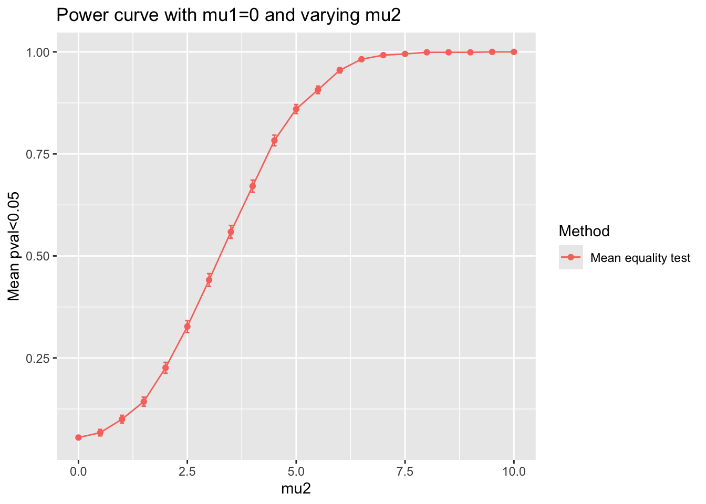
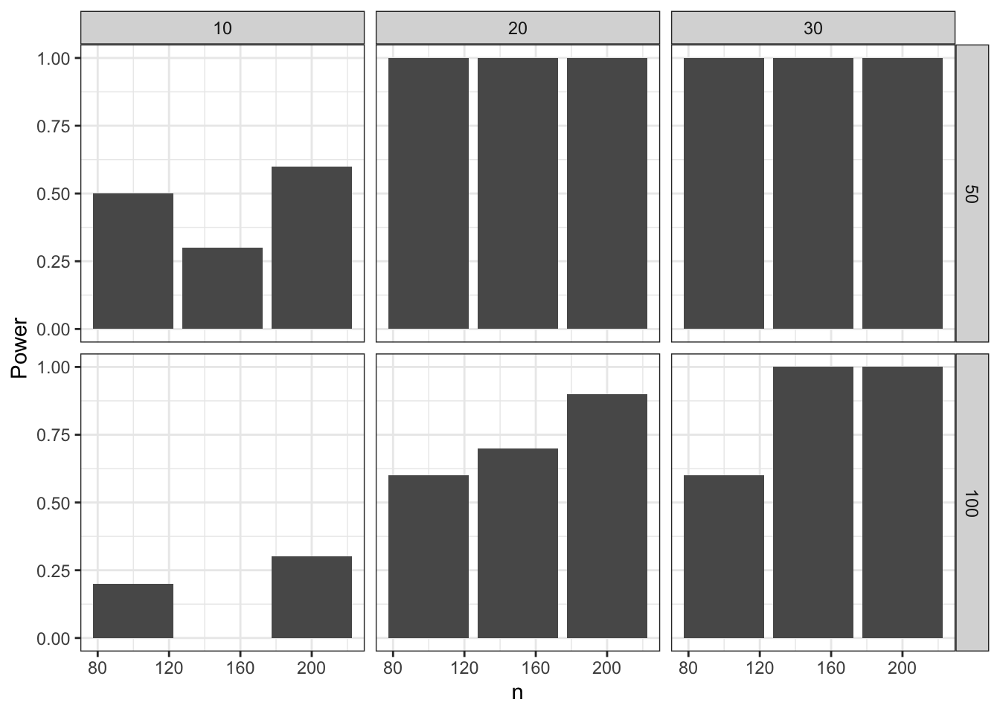

## Set up parameters
ns <- c(100L, 150L, 200L)
mean_diffs <- c(10, 20, 30)
sds <- c(50, 100)
reps <- 10L
## Bring together into data frame
results_template <- expand.grid(
n = ns,
mean_diff = mean_diffs,
sd = sds,
p.value = NA_real_
)
base_r_sim <- results_template[rep(1:nrow(results_template), each = reps), ]
## Loop over rows of the data frame and calculate the p-value
for (i in 1:nrow(results_template)) {
params <- base_r_sim[i,]
pre <- rnorm(params$n, 0, params$sd)
post <- pre + rnorm(params$n, params$mean_diff, params$sd)
base_r_sim$p.value[i] <- t.test(pre, post)$p.value
}
## Display table output
DT::datatable(base_r_sim)Setting up simulations in R
Overview
We explore several R packages for generate or structure simulations. Most statistical simulations studies includes different steps : generate data/ run one or several methods using simulated data / compare results.
We identified the following list of packages for data simulation:
{simulator}: A framework for performing simulations such as those common in methodological statistics papers. The design principles of this package are described in greater depth in Bien, J. (2016) “The simulator: An Engine to Streamline Simulations,” which is available at doi:10.48550/arXiv.1607.00021.
{simpr}: A general, ‘tidyverse’-friendly framework for simulation studies, design analysis, and power analysis. Specify data generation, define varying parameters, generate data, fit models, and tidy model results in a single pipeline, without needing loops or custom functions.
{DeclareDesign}: Researchers can characterize and learn about the properties of research designs before implementation using ‘DeclareDesign’. Ex ante declaration and diagnosis of designs can help researchers clarify the strengths and limitations of their designs and to improve their properties, and can help readers evaluate a research strategy prior to implementation and without access to results. It can also make it easier for designs to be shared, replicated, and critiqued.
{MonteCarlo}: Simplifies Monte Carlo simulation studies by automatically setting up loops to run over parameter grids and parallelising the Monte Carlo repetitions. It also generates LaTeX tables.
{simChef}: The goal is to help you quickly cook up a fully-realized, high-quality, reproducible, and transparently-documented simulation study in a flexible, efficient, and low-code manner. It removes many of the administrative burdens of simulation design through:
- An intuitive tidy grammar of data science simulations
- Powerful abstractions for distributed simulation processing backed by future
- Automated generation of interactive R Markdown simulation documentation, situating results next to the workflows needed to reproduce them.
{simEngine}: An open-source R package for structuring, maintaining, running, and debugging statistical simulations on both local and cluster-based computing environments. See full documentation at https://avi-kenny.github.io/SimEngine/.
How to choose?
Here is a comparison of the different packages summarised in a table:
| Name | Version | #deps | #rev deps | Latest commit | Latest release | Doc | On CRAN? | Developers |
|---|---|---|---|---|---|---|---|---|
| {DeclareDesign} | 1.0.10 | 2 | 1 | 2024-04-13 | 2024-04-21 | Yes | Graeme Blair | |
| {MonteCarlo} | 1.0.6 | 6 | 0 | 2019-01-31 | 2019-01-31 | Yes | Christian Hendrik Leschinski | |
| {simChef} | 0.1.0 | 22 | 0 | 2024-03-20 | NA | No | Tiffany Tang, James Duncan | |
| {simEngine} | 1.4.0 | 6 | 0 | 2024-04-13 | 2024-04-04 | Yes | Avi Kenny, Charles Wolock | |
| {simpr} | 0.2.6 | 11 | 0 | 2024-07-16 | 2023-04-26 | Yes | Ethan Brown | |
| {simulator} | 0.2.5 | 1 | 0 | 2023-02-02 | 2023-02-04 | Yes | Jacob Bien |
This table shows that all packages are on CRAN, except for {simChef}. The latest release of {simChef} is not available, but the latest commit was in March 2024 so it is actively maintained. The number of dependencies is quite high for {simChef} and {simpr}. The number of reverse dependencies is low for all packages. The package {MonteCarlo} seams not to be maintained anymore.
Also, in terms of philosophy, the {DeclareDesign} package is dedicated to experimental design. It also makes it possible to simulate an experimental design of interest, in order to understand the properties of this design. As its goal is not to evaluate computational methods via simulations, it does not address the question of interest and we did not evaluate it further. The underlying experimental design principles are described in the companion book: https://book.declaredesign.org/.
In the following, we will therefore focus on the packages {simEngine}, {simChef}, {simpr}, and {simulator}. The next section describes the common simulation problem we will use to compare the packages. Then, we will show how to solve this problem with each package. Finally, we will compare the packages based on the code, the output, and the ease of use.
A common simulation problem: power curve for test calibration
We consider a common simulation problem: power curve estimation for hypothesis test calibration.
We consider a two-sample paired t-test simple example. The first sample is generated from a normal distribution with mean 0 and standard deviation sd. The second sample is generated from a normal distribution with mean mean_diff and standard deviation sd. The sample size is n. We want to estimate the power of the paired t-test for different values of mean_diff and ds. Specifically, we will use the following parameters:
n: 100, 150, 200;mean_diff: 10, 20, 30;sd: 50, 100.
We will estimate the power by simulating the paired t-test for each combination of parameters. We will repeat the simulation 10 times for each combination of parameters.
The base R solution for this problem can look like this:
{simpr}
What is bad in the base R solution according to {simpr} authors:
- Most important pieces (data generating process, model specification, definitions, varying parameters) are hidden;
- What if there is an error?
- What about parallelization?
- Is this code sufficiently readable? Without the comments?
{simpr} solution
simpr_tbl <- specify(
pre = ~ rnorm(n, 0, sd),
post = ~ pre + rnorm(n, mean_diff, sd)
) |>
define(n = ns, mean_diff = mean_diffs, sd = sds) |>
generate(reps, .progress = TRUE) |>
fit(t = ~ t.test(post, pre, paired = TRUE)) |>
tidy_fits()
Attaching package: 'purrr'The following object is masked from 'package:magrittr':
set_namesDT::datatable(simpr_tbl)simpr_tbl |>
dplyr::group_by(n, mean_diff, sd) |>
dplyr::summarize(Power = mean(p.value < 0.05)) |>
dplyr::ungroup() |>
ggplot(aes(n, Power)) +
geom_col() +
facet_grid(rows = dplyr::vars(sd), cols = dplyr::vars(mean_diff)) +
theme_bw()`summarise()` has grouped output by 'n', 'mean_diff'. You can override using
the `.groups` argument.
Philosophy
The {simpr} workflow, inspired by the {infer} package, distills a simulation study into five primary steps:
specify()your data-generating process;define()parameters that you want to systematically vary across your simulation design (e.g. n, effect size);generate()the simulation data;fit()models to your data (e.g.lm());tidy_fits()for consolidating results usingbroom::tidy(), such as computing power or Type I Error rates.
Reproducible workflows
- Same seed, same results;
- Can regenerate just a specific subset to see what happened in that particular dataset or fit;
- Useful in debugging and diagnosing unexpected results, etc.
Filtering full simulation
withr::with_seed(500, {
specify(a = ~ runif(6)) |>
generate(3) |>
dplyr::filter(.sim_id == 3)
})full tibble
--------------------------
# A tibble: 1 × 3
.sim_id rep sim
<int> <int> <list>
1 3 3 <tibble [6 × 1]>
sim[[1]]
--------------------------
# A tibble: 6 × 1
a
<dbl>
1 0.371
2 0.959
3 0.633
4 0.177
5 0.803
6 0.133Simulate subset only
withr::with_seed(500, {
specify(a = ~ runif(6)) |>
generate(3, .sim_id == 3)
})full tibble
--------------------------
# A tibble: 1 × 3
.sim_id rep sim
<int> <int> <list>
1 3 3 <tibble [6 × 1]>
sim[[1]]
--------------------------
# A tibble: 6 × 1
a
<dbl>
1 0.371
2 0.959
3 0.633
4 0.177
5 0.803
6 0.133Benchmarking
bench::mark(
all = specify(a = ~ runif(6)) |>
generate(1000) |>
dplyr::filter(.sim_id == 1000),
subset = specify(a = ~ runif(6)) |>
generate(1000, .sim_id == 1000),
check = FALSE, min_iterations = 10L, relative = TRUE
)Warning: Some expressions had a GC in every iteration; so filtering is
disabled.# A tibble: 2 × 6
expression min median `itr/sec` mem_alloc `gc/sec`
<bch:expr> <dbl> <dbl> <dbl> <dbl> <dbl>
1 all 55.6 50.1 1 1 1
2 subset 1 1 52.5 1.28 1.27Other features
Data munging
Add per_sim() |> after generate() in your simulation pipeline and then any tidyverse function that will apply to every simulation dataset:
specify(
pre = ~ rnorm(n, 0, sd),
post = ~ pre + rnorm(n, mean_diff, sd)
) |>
define(n = ns, mean_diff = mean_diffs, sd = sds) |>
generate(reps, .progress = TRUE) |>
## Apply tidyverse functions to every simulation dataset
per_sim() |>
## Mutate to add a range restriction
dplyr::mutate(dplyr::across(dplyr::everything(), dplyr::case_when(
pre > 100 ~ 100,
pre < -100 ~ -100,
.default ~ pre
))) |>
fit(t = ~ t.test(post, pre, paired = TRUE)) |>
tidy_fits()
Error handling
- Can change error handling to keep going with simulation, stop simulation, or to skip warnings;
- Debug and recovery options to enter into simulation during error.
Built-in parallelization
Just add
library(future)
plan(multisession, workers = 6) # or however many cores are reasonable to useand your simulation pipeline (actually the generate() function) will run in parallel.
Pros & cons
{simulator}
This is a package on the CRAN. It is described in a 2016 paper by Jacob Bien. Last update on GitHub : last year (so, 2023).
Getting started
The function create(), with a directory that does not exist, will create the directory with 5 files and 1 folder:
eval_functions.R: contains metrics to be evaluated;files/: directory to store results;main.R: main code to run;method_functions.R: methods to run;model_functions.R: define the models;writeup.Rmd.
simulator_dir <- "./sims_simulator"
if (!file.exists(simulator_dir))
create(simulator_dir)New simulation template created! Go to ./sims_simulator/main.R to get started.withr::with_dir(simulator_dir, {
list.files()
})[1] "eval_functions.R" "main.R" "method_functions.R"
[4] "model_functions.R" "writeup.Rmd" On a typical project, one starts by defining a model in
model_functions.R, one or two methods inmethod_functions.R, and a few metrics ineval_functions.R, and then one runs the code inmain.R. After looking at some of the results, one might add an additional model or method or metric. One then returns tomain.R, adds some additional lines specifying that the additional components should be run as well and looks at some more results.The simplest way to look at results is by using the plot functions
plot_eval(),plot_evals()andplot_evals_by(). In situations where you wish to investigate results more deeply than just looking at aggregated plots, one can use the functionsmodel(),draws(),output(), andevals()to get at all objects generated through the course of the simulation.
The create() function also creates the template in the different files:
Content of model_functions.R
make_my_model <- function(n, prob) {
new_model(
name = "contaminated-normal",
label = sprintf("Contaminated normal (n = %s, prob = %s)", n, prob),
params = list(n = n, mu = 2, prob = prob),
simulate = function(n, mu, prob, nsim) {
# this function must return a list of length nsim
contam <- runif(n * nsim) < prob
x <- matrix(rep(NA, n * nsim), n, nsim)
x[contam] <- rexp(sum(contam))
x[!contam] <- rnorm(sum(!contam))
x <- mu + x # true mean is mu
return(split(x, col(x))) # make each col its own list element
}
)
}Define a model from its different components with new_model():
name;label: what will be printed in the tables later probably?param: a list of different parameters for the model;simulate: a function of the parameters that returnsnsimsimulations.
Content of method_functions.R
my_method <- new_method(
name = "my-method",
label = "My Method",
method = function(model, draw) {
list(fit = median(draw))
}
)
their_method <- new_method(
name = "their-method",
label = "Their Method",
method = function(model, draw) {
list(fit = mean(draw))
}
)Define methods to be used on the model. The function new_method() has for arguments a name (for R) name, a pretty name label, and the method named arg for the computation we want.
Content of eval_functions.R
his_loss <- new_metric(
name = "hisloss",
label = "His loss function",
metric = function(model, out) {
return((model$mu - out$fit)^2)
}
)
her_loss <- new_metric(
name = "herloss",
label = "Her loss function",
metric = function(model, out) {
return(abs(model$mu - out$fit))
}
)Metric objects: shows how to compare model object and output of the method (method used on sim) object.
Content of main.R
setwd(simulator_dir)
source("model_functions.R")
source("method_functions.R")
source("eval_functions.R")
## @knitr init
name_of_simulation <- "normal-mean-estimation-with-contamination"
## @knitr main
sim <- new_simulation(
name = name_of_simulation,
label = "Mean estimation under contaminated normal"
) %>%
generate_model(
make_model = make_my_model,
seed = 123,
n = 50,
prob = as.list(seq(0, 1, length = 6)),
vary_along = "prob"
) %>%
simulate_from_model(nsim = 10) %>%
run_method(list(my_method, their_method)) %>%
evaluate(list(his_loss, her_loss))
## @knitr plots
plot_eval_by(sim = sim, metric_name = "hisloss", varying = "prob")
## @knitr tables
tabulate_eval(
object = sim,
metric_name = "herloss",
output_type = "markdown",
format_args = list(digits = 1)
)The main.R script calls the different files.
Can plot_eval_by() be used for different metrics at once? Can tabulate_eval() be used for different metrics at once?
Example: power curve
Here is the content of the main.R file in the folder simulator_equality_test/.
library(simulator) # this file was created under simulator version 0.2.5
source("simulator_equality_test/model_functions.R")
source("simulator_equality_test/method_functions.R")
source("simulator_equality_test/eval_functions.R")
## @knitr init
name_of_simulation <- "normal-mean-test"
## @knitr main
suppressMessages(
sim <- new_simulation(
name = name_of_simulation,
label = "Test of mean"
) |>
generate_model(
make_model = make_my_model_normal,
seed = 13,
n = 20,
mu2 = as.list(seq(0, 10, by = 0.5)),
mu1 = 0,
sig = 5,
vary_along = "mu2"
) |>
simulate_from_model(nsim = 1000) |>
run_method(list(t_test)) |>
evaluate(list(pval_loss))
)..Created model and saved in normal/mu1_0/mu2_0/n_20/sig_5/model.Rdata
..Created model and saved in normal/mu1_0/mu2_0.5/n_20/sig_5/model.Rdata
..Created model and saved in normal/mu1_0/mu2_1/n_20/sig_5/model.Rdata
..Created model and saved in normal/mu1_0/mu2_1.5/n_20/sig_5/model.Rdata
..Created model and saved in normal/mu1_0/mu2_2/n_20/sig_5/model.Rdata
..Created model and saved in normal/mu1_0/mu2_2.5/n_20/sig_5/model.Rdata
..Created model and saved in normal/mu1_0/mu2_3/n_20/sig_5/model.Rdata
..Created model and saved in normal/mu1_0/mu2_3.5/n_20/sig_5/model.Rdata
..Created model and saved in normal/mu1_0/mu2_4/n_20/sig_5/model.Rdata
..Created model and saved in normal/mu1_0/mu2_4.5/n_20/sig_5/model.Rdata
..Created model and saved in normal/mu1_0/mu2_5/n_20/sig_5/model.Rdata
..Created model and saved in normal/mu1_0/mu2_5.5/n_20/sig_5/model.Rdata
..Created model and saved in normal/mu1_0/mu2_6/n_20/sig_5/model.Rdata
..Created model and saved in normal/mu1_0/mu2_6.5/n_20/sig_5/model.Rdata
..Created model and saved in normal/mu1_0/mu2_7/n_20/sig_5/model.Rdata
..Created model and saved in normal/mu1_0/mu2_7.5/n_20/sig_5/model.Rdata
..Created model and saved in normal/mu1_0/mu2_8/n_20/sig_5/model.Rdata
..Created model and saved in normal/mu1_0/mu2_8.5/n_20/sig_5/model.Rdata
..Created model and saved in normal/mu1_0/mu2_9/n_20/sig_5/model.Rdata
..Created model and saved in normal/mu1_0/mu2_9.5/n_20/sig_5/model.Rdata
..Created model and saved in normal/mu1_0/mu2_10/n_20/sig_5/model.Rdata
..Simulated 1000 draws in 0 sec and saved in normal/mu1_0/mu2_0/n_20/sig_5/r1.Rdata
..Simulated 1000 draws in 0 sec and saved in normal/mu1_0/mu2_0.5/n_20/sig_5/r1.Rdata
..Simulated 1000 draws in 0 sec and saved in normal/mu1_0/mu2_1/n_20/sig_5/r1.Rdata
..Simulated 1000 draws in 0 sec and saved in normal/mu1_0/mu2_1.5/n_20/sig_5/r1.Rdata
..Simulated 1000 draws in 0 sec and saved in normal/mu1_0/mu2_2/n_20/sig_5/r1.Rdata
..Simulated 1000 draws in 0 sec and saved in normal/mu1_0/mu2_2.5/n_20/sig_5/r1.Rdata
..Simulated 1000 draws in 0 sec and saved in normal/mu1_0/mu2_3/n_20/sig_5/r1.Rdata
..Simulated 1000 draws in 0 sec and saved in normal/mu1_0/mu2_3.5/n_20/sig_5/r1.Rdata
..Simulated 1000 draws in 0 sec and saved in normal/mu1_0/mu2_4/n_20/sig_5/r1.Rdata
..Simulated 1000 draws in 0 sec and saved in normal/mu1_0/mu2_4.5/n_20/sig_5/r1.Rdata
..Simulated 1000 draws in 0 sec and saved in normal/mu1_0/mu2_5/n_20/sig_5/r1.Rdata
..Simulated 1000 draws in 0 sec and saved in normal/mu1_0/mu2_5.5/n_20/sig_5/r1.Rdata
..Simulated 1000 draws in 0 sec and saved in normal/mu1_0/mu2_6/n_20/sig_5/r1.Rdata
..Simulated 1000 draws in 0 sec and saved in normal/mu1_0/mu2_6.5/n_20/sig_5/r1.Rdata
..Simulated 1000 draws in 0 sec and saved in normal/mu1_0/mu2_7/n_20/sig_5/r1.Rdata
..Simulated 1000 draws in 0 sec and saved in normal/mu1_0/mu2_7.5/n_20/sig_5/r1.Rdata
..Simulated 1000 draws in 0 sec and saved in normal/mu1_0/mu2_8/n_20/sig_5/r1.Rdata
..Simulated 1000 draws in 0 sec and saved in normal/mu1_0/mu2_8.5/n_20/sig_5/r1.Rdata
..Simulated 1000 draws in 0 sec and saved in normal/mu1_0/mu2_9/n_20/sig_5/r1.Rdata
..Simulated 1000 draws in 0.01 sec and saved in normal/mu1_0/mu2_9.5/n_20/sig_5/r1.Rdata
..Simulated 1000 draws in 0 sec and saved in normal/mu1_0/mu2_10/n_20/sig_5/r1.Rdata
..Performed Mean equality test in 0 seconds (on average over 1000 sims)
..Performed Mean equality test in 0 seconds (on average over 1000 sims)
..Performed Mean equality test in 0 seconds (on average over 1000 sims)
..Performed Mean equality test in 0 seconds (on average over 1000 sims)
..Performed Mean equality test in 0 seconds (on average over 1000 sims)
..Performed Mean equality test in 0 seconds (on average over 1000 sims)
..Performed Mean equality test in 0 seconds (on average over 1000 sims)
..Performed Mean equality test in 0 seconds (on average over 1000 sims)
..Performed Mean equality test in 0 seconds (on average over 1000 sims)
..Performed Mean equality test in 0 seconds (on average over 1000 sims)
..Performed Mean equality test in 0 seconds (on average over 1000 sims)
..Performed Mean equality test in 0 seconds (on average over 1000 sims)
..Performed Mean equality test in 0 seconds (on average over 1000 sims)
..Performed Mean equality test in 0 seconds (on average over 1000 sims)
..Performed Mean equality test in 0 seconds (on average over 1000 sims)
..Performed Mean equality test in 0 seconds (on average over 1000 sims)
..Performed Mean equality test in 0 seconds (on average over 1000 sims)
..Performed Mean equality test in 0 seconds (on average over 1000 sims)
..Performed Mean equality test in 0 seconds (on average over 1000 sims)
..Performed Mean equality test in 0 seconds (on average over 1000 sims)
..Performed Mean equality test in 0 seconds (on average over 1000 sims)
..Evaluated Mean equality test in terms of pval<0.05, Computing time (sec)
..Evaluated Mean equality test in terms of pval<0.05, Computing time (sec)
..Evaluated Mean equality test in terms of pval<0.05, Computing time (sec)
..Evaluated Mean equality test in terms of pval<0.05, Computing time (sec)
..Evaluated Mean equality test in terms of pval<0.05, Computing time (sec)
..Evaluated Mean equality test in terms of pval<0.05, Computing time (sec)
..Evaluated Mean equality test in terms of pval<0.05, Computing time (sec)
..Evaluated Mean equality test in terms of pval<0.05, Computing time (sec)
..Evaluated Mean equality test in terms of pval<0.05, Computing time (sec)
..Evaluated Mean equality test in terms of pval<0.05, Computing time (sec)
..Evaluated Mean equality test in terms of pval<0.05, Computing time (sec)
..Evaluated Mean equality test in terms of pval<0.05, Computing time (sec)
..Evaluated Mean equality test in terms of pval<0.05, Computing time (sec)
..Evaluated Mean equality test in terms of pval<0.05, Computing time (sec)
..Evaluated Mean equality test in terms of pval<0.05, Computing time (sec)
..Evaluated Mean equality test in terms of pval<0.05, Computing time (sec)
..Evaluated Mean equality test in terms of pval<0.05, Computing time (sec)
..Evaluated Mean equality test in terms of pval<0.05, Computing time (sec)
..Evaluated Mean equality test in terms of pval<0.05, Computing time (sec)
..Evaluated Mean equality test in terms of pval<0.05, Computing time (sec)
..Evaluated Mean equality test in terms of pval<0.05, Computing time (sec)## @knitr tables
tabulate_eval(
sim,
metric_name = "p_value",
output_type = "markdown",
format_args = list(digits = 5)
)<!-- generated by simulator on Thu Aug 22 16:33:15 2024. -->| Mean equality test | |
|---|---|
| normal | 0.055 (0.0072130) |
| normal | 0.067 (0.0079103) |
| normal | 0.100 (0.0094916) |
| normal | 0.143 (0.0110758) |
| normal | 0.226 (0.0132325) |
| normal | 0.327 (0.0148422) |
| normal | 0.441 (0.0157088) |
| normal | 0.559 (0.0157088) |
| normal | 0.671 (0.0148654) |
| normal | 0.783 (0.0130415) |
| normal | 0.860 (0.0109782) |
| normal | 0.907 (0.0091889) |
| normal | 0.955 (0.0065588) |
| normal | 0.982 (0.0042064) |
| normal | 0.992 (0.0028185) |
| normal | 0.995 (0.0022316) |
| normal | 0.999 (0.0010000) |
| normal | 0.999 (0.0010000) |
| normal | 0.999 (0.0010000) |
| normal | 1.000 (0.0000000) |
| normal | 1.000 (0.0000000) |
## @knitr plots
plot_eval_by(
sim,
metric_name = "p_value",
varying = "mu2",
main = "Power curve with mu1=0 and varying mu2"
)
ToDo :
- vary
n - vary both
nandmu2
Important functions
new_model();new_method();new_metric();new_simulation();generate_model();simulate_from_model();run_method();evaluate();plot_eval(),plot_eval_by(),tabulate_eval().
Pros & cons
This is not really a package that codes a method, but instead it proposes an architecture to store your codes, output simulations, results, etc.
{simEngine}
{simEngine} is an open-source R package for structuring, maintaining, running, and debugging statistical simulations on both local and cluster-based computing environments. The paper describing the package is available here.
Example
- Create a simulation object
SimEngine::new_sim()
sim <- new_sim()- Create functions to generate data
create_data <- function(n) {
return(rpois(n = n, lambda = 20))
}
est_lambda <- function(dat, type) {
if (type=="M") {
return(mean(dat))
}
if (type=="V") {
return(var(dat))
}
}- Simulation set-up
One run = one simulation replicate. Features varying across simulation = simulation levels. Possible values = level values. By default, {simEngine} runs one simulation replicate for each combination of level value.
sim <- sim |>
set_levels(
estimator = c("M", "V"),
n = c(10, 100, 1000)
)
simSimEngine: simulation object (class "sim_obj")
----------------------------------------------
Configuration:
num_sim: 1
parallel: FALSE
n_cores: NA
packages: NULL
stop_at_error: FALSE
seed: 528361534
progress_bar: TRUE
batch_levels: NA
return_batch_id: FALSE
Levels:
estimator: c("M", "V")
n: c(10, 100, 1000)
State: pre run- Create a simulation script
i.e. generation, analysis and return results
sim <- sim |>
set_script(function() {
dat <- create_data(n = L$n)
lambda_hat <- est_lambda(dat = dat, type = L$estimator)
return(list("lambda_hat" = lambda_hat))
})- Configure and run the simulation
Using the SimEngine::set_config() it is possible to specify the number of replicates num_sim, the parallelization type n_cores, parallel, … and the required packages packages argument.
And we run the simulation with the SimEngine::run() function.
### Configuration
sim <- sim |>
set_config(
num_sim = 100,
packages = c("ggplot2", "stringr")
)
### Run
sim <- run(sim)Done. No errors or warnings detected.The package implements a SimEngine::summarize() function to calculate usual summary statistics such as bias, variance, MSE.
sim |>
summarize(
list(
stat = "bias",
name = "bias_lambda",
estimate = "lambda_hat",
truth = 20
),
list(
stat = "mse",
name = "mse_lambda",
estimate = "lambda_hat",
truth = 20
)
) level_id estimator n n_reps bias_lambda mse_lambda
1 1 M 10 100 -0.0930000 1.75850000
2 2 V 10 100 0.3353333 96.23611111
3 3 M 100 100 -0.0877000 0.20287100
4 4 V 100 100 -0.3656687 9.04930168
5 5 M 1000 100 0.0198000 0.02163858
6 6 V 1000 100 0.1130303 0.75417061We can have information on individual simulation including runtime.
head(sim$results) sim_uid level_id rep_id estimator n runtime lambda_hat
1 1 1 1 M 10 0.0004179478 20.3
2 7 1 2 M 10 0.0002481937 20.4
3 8 1 3 M 10 0.0002350807 19.8
4 9 1 4 M 10 0.0002431870 19.1
5 10 1 5 M 10 0.0002410412 19.8
6 11 1 6 M 10 0.0002489090 20.9It is possible to update simulation with more replicates or a new level. It keeps the old simulations and run only needed ones.
sim <- sim |>
set_config(num_sim = 200) |>
set_levels(
estimator = c("M", "V"),
n = c(10, 100, 1000, 10000)
) |>
update_sim()Done. No errors or warnings detected.Parallelization
A specific vignette is available and the introduction precises the terminology for parallel computing (node, core, task, job, etc.). There are two modes of parallelizing code: local or cluster. The first thing is to specify set_config(parallel = TRUE).
- Local: split calculations on several cores of a single computer. If the user’s computer has \(n\) cores available, {simEngine} will use \(n-1\) cores by default.
- Cluster: function
run_on_cluster(). To use the function, the user needs to break the code into three blocks :first(code run only once, set-up simulation object),main(a single call torun()) andlast(the code will run after all simulation replicates have finished running and after SimEngine has automatically compiled the results into the simulation object.).
run_on_cluster(
first = {
create_data <- function(n) {
return(rpois(n = n, lambda = 20))
}
est_lambda <- function(dat, type) {
if (type == "M") {
return(mean(dat))
}
if (type == "V") {
return(var(dat))
}
}
sim <- new_sim() |>
set_levels(estimator = c("M", "V"), n = c(10, 100, 1000)) |>
set_script(function() {
dat <- create_data(L$n)
lambda_hat <- est_lambda(dat = dat, type = L$estimator)
return(list("lambda_hat" = lambda_hat))
}) |>
set_config(num_sim = 100, n_cores = 20)
},
main = {
sim <- run(sim)
},
last = {
sim <- summarize(sim)
},
cluster_config = list(js = "slurm")
) Done. No errors or warnings detected.The cluster_config argument enables to specify options such as the choice of the scheduler.
Example on how to give instruction to the job scheduler is on the vignette.
Be caution: the number of cores cannot exceed the total number of simulation replicates.
Function to update simulation on a CSS: update_sim_on_cluster(). Difference is we do not need to create a new simulation config but load the existing simulation using readRDS() and use set_config() or set_levels() and update_sim() in the main block.
There is a vignette on advanced functionality such as complex results or simulation levels. It exists the batch() function to share data or objects between simulation replicates.
Pros & cons
Simulation-based power calculation
A [specific vignette] is available on the author’s website.
{simChef}
This document describes a simulation experiment using the {simChef} package in R, including data generation, method application, evaluation, and visualization.
A specific vignette is available on the author’s website for more detailed instructions and examples on using the {simChef} package.
Setup
The {simChef} package is not on CRAN and must therefore be installed from GitHub using the {remotes} package as follows:
remotes::install_github("Yu-Group/simChef")In {simChef}, a simulation experiment is divided into four components:
DGP(): the data-generating processes (DGPs) from which to generate data;Method(): the methods (or models) to fit on the data in the experiment;Evaluator(): the evaluation metrics used to evaluate the methods’ performance;Visualizer(): the visualization procedures used to visualize outputs from the method fits or evaluation results (can be tables, plots, or even R Markdown snippets to display).
Step 1: Define the Data-Generating Process, Methods, and Evaluation Functions
Data-Generating Process
The following function generates pre- and post-treatment data:
dgp_fun <- function(n, sd, mean_diff) {
pre <- rnorm(n, 0, sd)
post <- pre + rnorm(n, mean_diff, sd)
list(pre = pre, post = post)
}Method
The following function applies a paired t-test to the data:
method_fun <- function(pre, post) {
t.test(post, pre, paired = TRUE)
}Evaluation
The following function evaluates the power of the test:
evaluation_fun <- function(fit_results) {
Power <- fit_results |>
dplyr::group_by(n, mean_diff, sd) |>
dplyr::summarize(Power = mean(p.value < 0.05))
}Visualization
The following function creates a plot to visualize the power:
power_plot_fun <- function(fit_results, eval_results) {
fit_results |>
dplyr::group_by(n, mean_diff, sd) |>
dplyr::summarize(Power = mean(p.value < 0.05)) |>
ggplot(aes(n, Power)) +
geom_col() +
facet_grid(rows = dplyr::vars(sd), cols = dplyr::vars(mean_diff)) +
theme_bw()
}Step 2: Convert Functions into {simChef} Class Objects
dgp <- create_dgp(
.dgp_fun = dgp_fun, .name = "DGP"
)
method <- create_method(
.method_fun = method_fun, .name = "T-test"
)
evaluation <- create_evaluator(
.eval_fun = evaluation_fun , .name = 'P.value'
)
power_plot <- create_visualizer(
.viz_fun = power_plot_fun, .name = 'Power plot'
)Step 3: Assemble the Simulation Experiment
experiment <- create_experiment(name = "Example Experiment") |>
add_dgp(dgp) |>
add_method(method) |>
add_evaluator(evaluation) |>
add_visualizer(power_plot)
## Define the grid of simulation parameters
experiment <- experiment |>
add_vary_across(.dgp = "DGP", n = ns, mean_diff = mean_diffs, sd = sds)
print(experiment)Experiment Name: Example Experiment
Saved results at: results/Example Experiment
DGPs: DGP
Methods: T-test
Evaluators: P.value
Visualizers: Power plot
Vary Across:
DGP: DGP
n: int [1:3] 100 150 200
mean_diff: num [1:3] 10 20 30
sd: num [1:2] 50 100Step 4: Run the Experiment
results <- run_experiment(experiment, n_reps = reps, save = TRUE)Fitting Example Experiment...
Saving fit results...
Fit results saved | time taken: 0.011918 seconds
10 reps completed (totals: 10/10) | time taken: 0.408452 minutes
==============================
Evaluating Example Experiment...
`summarise()` has grouped output by 'n', 'mean_diff'. You can override using the `.groups` argument.
Evaluation completed | time taken: 0.000100 minutes
Saving eval results...
Eval results saved | time taken: 0.033090 seconds
==============================
Visualizing Example Experiment...
`summarise()` has grouped output by 'n', 'mean_diff'. You can override using the `.groups` argument.
Visualization completed | time taken: 0.000151 minutes
Saving viz results...
Viz results saved | time taken: 0.053092 seconds
==============================DT::datatable(results$fit_results)results$viz_results$`Power plot`